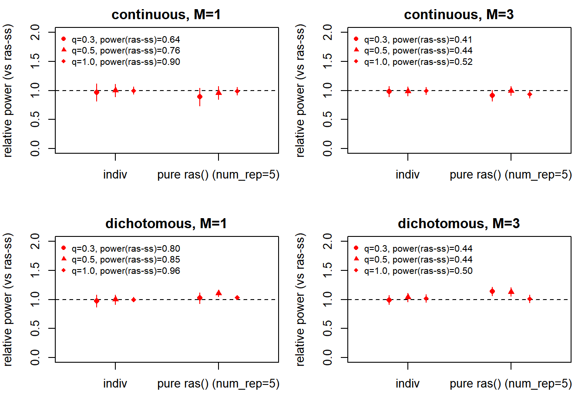
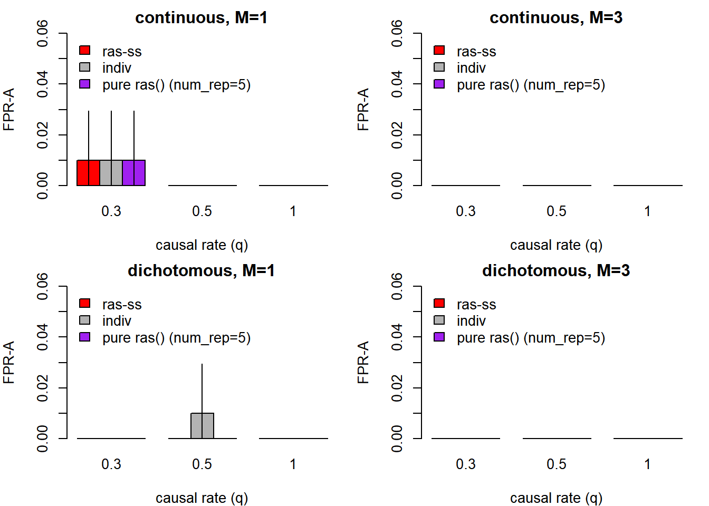
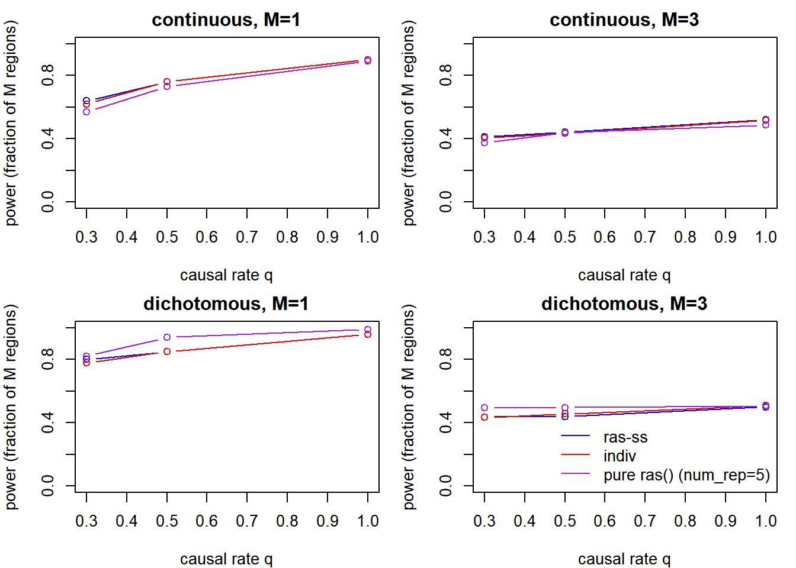
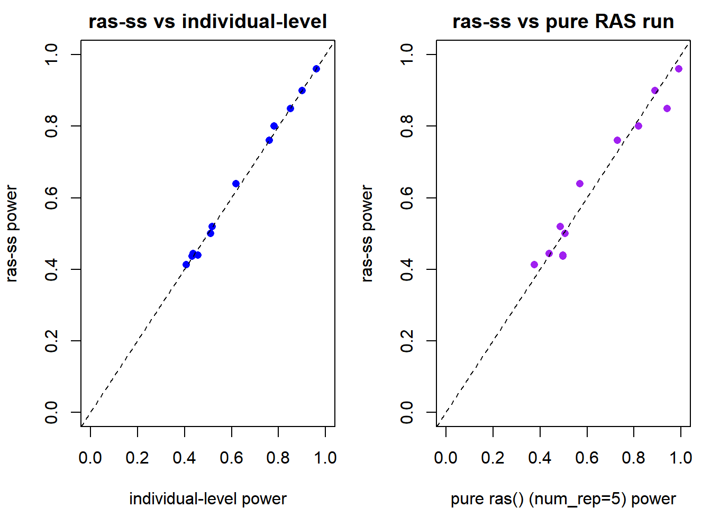

The main simulation study, replicating the design of Jiang & Zhang (2025) on a simulated 1,000-SNP chromosome. Pilot and validation on the 300-SNP toy: Pilot Study, Validation.
Note: Jiang & Zhang’s Simulation Study simulated phenotypes on real ABCD chr21 genotypes. Until those can be accessed, this page uses a synthetic 1,000-SNP chromosome with a similar design.
knitr::opts_chunk$set(echo = TRUE, autodep = TRUE)
options(future.rng.onMisuse = "ignore")
library(mvtnorm); library(RAS); library(future.apply)Loading required package: futureplan(multisession)
source("code/ras_ss.R") # shared scan/detect helper functions# simulated chromosome with "LD block structure"
# 10 independent LD blocks of 100 SNPs, AR(1) rho=0.8 inside each block
n_snps <- 1000; n_blocks <- 10; block_len <- n_snps / n_blocks; rho <- 0.8
n_disc <- 1000; n_targ <- 1000 # discovery + target cohort sizes (method A)
n_ref <- 5000 # reference panel for the empirical LD
skip1 <- 10; # pivotal SNP every 10th SNP
skip2 <- 5; # step size for adaptive window widths
min_window_size <- 5; max_window_size <- 20 # adaptive window half-widths
T_region <- 100 # width of a true association region
tolerance <- 100 # a detected peak within 100 SNPs of a true region is considered a hit
min_signal <- 2.5 # paper default, for CPD algorithm
q_rates <- c(0.3, 0.5, 1.0) # fraction of the region's SNPs that are causal
traits <- c("continuous", "dichotomous")
M_vals <- c(1, 3) # how many true regions on the chromosome
region_starts <- list(`1` = 400, `3` = c(100, 400, 700))
# effects a bit bigger than the 300-SNP toy so power is visible at n=1000
c_eff <- list(continuous = 0.5, dichotomous = 0.8)
base_seed <- 35
# detection thresholds, picked on null reps (see calibrate chunk)
best_ws <- 30; slope_thresh <- 1e-6; davies_thresh <- 1e-5
R_true <- matrix(0, n_snps, n_snps)
for (b in 0:(n_blocks-1)) {
idx <- b*block_len + 1:block_len
R_true[idx, idx] <- outer(1:block_len, 1:block_len, function(i,j) rho^abs(i-j)) # build LD correlation matrix with AR(1) w/ rho 0.8
}
set.seed(base_seed)
X_ref <- sim_genotypes(n_ref, R_true) # 5000 correlated genotypes
R_emp <- cor(X_ref) # empirical LD from the reference
prune_filter <- prune_ld(R_emp, 0.2) # drop SNPs w/ high LD, keeping only one (LD pruning)
# a sparse cluster of causal SNPs in the middle of each region,
# random +/- signs like the paper
make_beta <- function(M, q, mag, seed) {
set.seed(seed)
beta <- rep(0, n_snps)
for (s in region_starts[[as.character(M)]]) {
center <- s + T_region %/% 2
reg <- (center-10):(center+10)
ca <- sample(reg, max(3, round(q*length(reg))))
beta[ca] <- sample(c(-1,1), length(ca), TRUE) * mag
}
beta
}
# continuous: X beta + noise
# dichotomous: call someone a "case" if L exceeds cutoff
make_pheno <- function(X, beta, trait, seed) {
set.seed(seed)
L <- as.numeric(X %*% beta) + rnorm(nrow(X), 0, 3)
if (trait=="continuous") L else as.numeric(L > qnorm(0.8))
}
# Rao score test for a binary trait (linear-regression Z is inappropriate for 0/1 y)
get_marginal_stats_bin <- function(X, y) {
p0 <- mean(y)
Xc <- sweep(X, 2, colMeans(X), "-")
U <- as.numeric(crossprod(Xc, y-p0))
V <- p0*(1-p0)*colSums(Xc^2)
list(beta = U/pmax(V,1e-12),
z = {z <- U/sqrt(pmax(V,1e-12)); z[!is.finite(z)] <- 0; z})
}
# paper's scoring metric: count_fp = calls that fall outside every true region,
# count_fn = true regions that got no call
dist_reg <- function(t, s) pmax(s - t, t - (s + T_region - 1), 0)
count_fp <- function(tau, starts) {
if(!length(tau)) return(0)
sum(sapply(tau, function(t) min(sapply(starts, function(s) dist_reg(t,s)))) > tolerance)
}
count_fn <- function(tau, starts) {
if(!length(starts)) return(0)
if(!length(tau)) return(length(starts))
sum(sapply(starts, function(s) min(sapply(tau, function(t) dist_reg(t,s)))) > tolerance)
}# wrapping original package's two detection functions
run_detect <- function(scan, ws=30, scw=15, sl=1e-3, sr=1e-3, dav=1e-3) {
tryCatch({
nc <- file(nullfile(), open="wt")
sink(nc, type="output"); sink(nc, type="message")
cp <- ras_detect(x=seq_along(scan$x), y=scan$y, window_size=ws, slope_check_window_size=scw,
slope.p.values.threshold.left=sl, slope.p.values.threshold.right=sr)
val <- suppressWarnings(ras_validate(
this.result=cp, x=seq_along(scan$x), y=scan$y, this.start=1,
this.skip=skip1, second_window_size=20, min_signal=min_signal, p.value.threshold=dav
))
sink(type="message"); sink(type="output"); close(nc)
list(tau=unique(val$tau_hats), error=FALSE) # SNP positions of called peaks
}, error=function(e){
try({sink(type="message");sink(type="output");close(nc)}, silent=TRUE)
list(tau=numeric(0), error=TRUE) # non-interrupting error handling
})
}
# one replicate: simulate discovery + target, run the ras-ss scan, and
# return target data so indiv can be run on the SAME replicate (paired)
sim_cohorts <- function(beta, trait, seed) {
set.seed(seed)
X_d <- sim_genotypes(n_disc, R_true)
X_t <- sim_genotypes(n_targ, R_true)
y_d <- make_pheno(X_d, beta, trait, seed+1)
y_t <- make_pheno(X_t, beta, trait, seed+2)
ms <- if (trait=="continuous") get_marginal_stats else get_marginal_stats_bin
list(X_d=X_d, X_t=X_t, y_d=y_d, y_t=y_t, disc=ms(X_d,y_d), targ=ms(X_t,y_t))
}
run_rep <- function(beta, trait, seed) {
co <- sim_cohorts(beta, trait, seed)
list(scan=scan_ss(co$disc$beta, co$targ$z, R_emp, prune_filter),
X_t=co$X_t, y_t=co$y_t, b_disc=co$disc$beta)
}# same idea as the paper. pick the thresholds that put null type I near 0.05.
# grid of slope/davies pairs, 50 null reps each
thresh_grid <- expand.grid(sl = c(1e-3, 1e-4, 1e-5, 1e-6, 1e-7), dav = c(1e-4, 1e-5, 1e-6, 1e-7))
cal_res <- matrix(NA, nrow(thresh_grid), 3)
colnames(cal_res) <- c("sl", "dav", "type1")
for (i in 1:nrow(thresh_grid)) {
hits <- unlist(future_lapply(1:50, function(s) {
r <- run_rep(rep(0, n_snps), "continuous", 400+s)
d <- run_detect(r$scan, sl=thresh_grid$sl[i], sr=thresh_grid$sl[i], dav=thresh_grid$dav[i])
length(d$tau) > 0
}, future.seed = TRUE))
cal_res[i, ] <- c(thresh_grid$sl[i], thresh_grid$dav[i], mean(hits))
}
print(cal_res)n_null <- 500; n_pow <- 100
sl <- slope_thresh; dv <- davies_thresh # calibrated detection thresholds
# save after each scenario so a pause doesn't lose the whole run.
# v2 stores raw FN counts, the type-I file is the older one, unchanged
ckpt <- "03_partial_v2.rds"
t1f <- "03_partial.rds_type1"
# type I per trait
type1_done <- if (file.exists(t1f)) readRDS(t1f) else list()
for (tr in traits) {
if (!is.null(type1_done[[tr]])) { cat("skip null", tr, "\n"); next } # if its already in checkpoint, skip
cat("null", tr, "\n")
hits <- do.call(rbind, future_lapply(seq_len(n_null), function(s) {
r <- run_rep(rep(0, n_snps), tr, 5000 + s)
# run across all three method, ss=summary stats, in=paired individual, pu=pure 5 rep run
d_ss <- run_detect(r$scan, sl=sl, sr=sl, dav=dv)
d_in <- run_detect(list(x=r$scan$x, y=indiv_scan(r$scan, r$X_t, r$y_t, r$b_disc)), sl=sl, sr=sl, dav=dv)
pp <- quiet(native_run_via_ras(rep(0, n_snps), 6000 + s))
d_pu <- run_detect(pp, sl=sl, sr=sl, dav=dv)
# called at least one region = false positive
c(ss = length(d_ss$tau)>0, indiv = length(d_in$tau)>0, pure = length(d_pu$tau)>0)
}, future.seed = TRUE))
type1_done[[tr]] <- colMeans(hits); saveRDS(type1_done, t1f)
}
type1 <- do.call(rbind, type1_done)
# power / FPR-A per scenario, keep the raw FN counts so we can define
# power a couple of ways later without rerunning
done <- if (file.exists(ckpt)) readRDS(ckpt) else list()
for (tr in traits) for (M in M_vals) for (q in q_rates) {
key <- sprintf("%s_M%d_q%.1f", tr, M, q)
if (key %in% names(done)) { cat("skip", key, "\n"); next }
# if checkpointed already, skip
cat("power", key, "\n")
starts <- region_starts[[as.character(M)]]
pw <- do.call(rbind, future_lapply(seq_len(n_pow), function(s) {
b <- make_beta(M, q, c_eff[[tr]], s) # these are signal reps, region detection is expected
r <- run_rep(b, tr, 1000 + s)
# run across all three method, ss=summary stats, in=paired individual, pu=pure 5 rep run
d_ss <- run_detect(r$scan, sl=sl, sr=sl, dav=dv)
d_in <- run_detect(list(x=r$scan$x, y=indiv_scan(r$scan, r$X_t, r$y_t, r$b_disc)), sl=sl, sr=sl, dav=dv)
pp <- quiet(native_run_via_ras(b, 2000 + s))
d_pu <- run_detect(pp, sl=sl, sr=sl, dav=dv)
c(ss_fn = count_fn(d_ss$tau,starts), ss_fpr = count_fp(d_ss$tau,starts),
in_fn = count_fn(d_in$tau,starts), in_fpr = count_fp(d_in$tau,starts),
pu_fn = count_fn(d_pu$tau,starts), pu_fpr = count_fp(d_pu$tau,starts))
}, future.seed = TRUE))
# save to RDS
done[[key]] <- data.frame(trait=tr, M=M, q=q, pw); saveRDS(done, ckpt)
}
# 12 scenarios x 100 reps = 1200 rows
res <- do.call(rbind, done)
# power defined as catching every region, like original paper
res$ss_power <- res$ss_fn == 0
res$in_power <- res$in_fn == 0
res$pu_power <- res$pu_fn == 0
# collapse to one row per scenario, averaging each column
agg <- aggregate(cbind(ss_power, in_power, pu_power, ss_fpr, in_fpr, pu_fpr) ~ trait + M + q, data=res, mean)# per-rep runtime, single core. cohort simulation once and excluded from ras-ss/indiv so the comparison isolates the scan step
nb <- 30
bench <- function(f) mean(sapply(1:nb, function(s) system.time(f(s))["elapsed"])) # run f(s) nb times, averaging elapsed time
bb <- make_beta(3, 0.5, c_eff$continuous, 7) # one fixed true-effect vector
cohorts <- lapply(1:nb, function(s) sim_cohorts(bb, "continuous", 900000+s)) # pre-simulated all 30 discovery/target cohorts once
grid_x <- seq(1, n_snps, by = skip1) # pivotal SNP positions, needed to wrap indiv_scan's output into scan-like object for run_detect
# three measurements with same pre-simulated cohorts, so it is fair comparison
t_ss <- bench(function(s) { co <- cohorts[[s]]
scan <- scan_ss(co$disc$beta, co$targ$z, R_emp, prune_filter)
quiet(run_detect(scan, sl=slope_thresh, sr=slope_thresh, dav=davies_thresh)) })
t_in <- bench(function(s) { co <- cohorts[[s]]
prof <- indiv_scan(list(x=grid_x), co$X_t, co$y_t, co$disc$beta)
quiet(run_detect(list(x=grid_x, y=prof), sl=slope_thresh, sr=slope_thresh, dav=davies_thresh)) })
t_pu <- bench(function(s) { pp <- quiet(native_run_via_ras(bb, 920000+s))
quiet(run_detect(pp, sl=slope_thresh, sr=slope_thresh, dav=davies_thresh)) })knitr::kable(data.frame(method=c("ras-ss","indiv","pure ras()"), s_per_rep=round(c(t_ss,t_in,t_pu),1)),
caption="Total runtime seconds per rep, single core (includes CPD step, so see following for more clear difference)")| method | s_per_rep |
|---|---|
| ras-ss | 6.8 |
| indiv | 7.7 |
| pure ras() | 30.0 |
# isolate algorithmic difference, with profile generation only (no CPD step)
# scan_ss = closed-form matrix algebra, and indiv_scan = multiple lm() calls
t_ss_scan <- bench(function(s) { co <- cohorts[[s]]
scan_ss(co$disc$beta, co$targ$z, R_emp, prune_filter) })
t_in_scan <- bench(function(s) { co <- cohorts[[s]]
indiv_scan(list(x=grid_x), co$X_t, co$y_t, co$disc$beta) })
knitr::kable(data.frame(step=c("ras-ss", "individual-level version"),
s_per_rep=round(c(t_ss_scan, t_in_scan), 3)),
caption="Algorithmic speedup, profile-generation time only (excludes the shared CPD step)")| step | s_per_rep |
|---|---|
| ras-ss | 0.045 |
| individual-level version | 0.482 |
set.seed(1)
res$ss_pow <- as.numeric(1 - res$ss_fn / res$M)
res$in_pow <- as.numeric(1 - res$in_fn / res$M)
res$pu_pow <- as.numeric(1 - res$pu_fn / res$M)
ci95 <- function(v) { v <- as.numeric(v); m <- mean(v); se <- sd(v)/sqrt(length(v)); c(m-1.96*se, m+1.96*se) }
pch_q <- c(16,17,18)
par(mfrow=c(2,2), mar=c(4,4,2,1))
for (tr in traits) for (M in M_vals) {
sub <- res[res$trait==tr & res$M==M,]
plot(NA, xlim=c(0.5,2.5), ylim=c(0,2), xaxt="n", xlab="", ylab="relative power (vs ras-ss)",
main=sprintf("%s, M=%d", tr, M))
abline(h=1, lty=2)
axis(1, at=1:2, labels=c("indiv","pure ras() (num_rep=5)"))
for (k in seq_along(q_rates)) {
s <- sub[sub$q==q_rates[k],]
den <- mean(as.numeric(s$ss_pow))
rels <- c(mean(as.numeric(s$in_pow)), mean(as.numeric(s$pu_pow))) / den
b <- sapply(list(s$in_pow, s$pu_pow), ci95) / den
xj <- c(1,2) + (k-2)*0.18
points(xj, rels, pch=pch_q[k], col="red")
segments(xj, b[1,], xj, b[2,], col="red")
}
pow_ss <- sapply(seq_along(q_rates), function(k) mean(as.numeric(sub[sub$q==q_rates[k],"ss_pow"])))
legend("topleft", legend=sprintf("q=%.1f, power(ras-ss)=%.2f", q_rates, pow_ss),
pch=pch_q, col="red", bty="n", cex=0.8)
}
Fig 2. Power of the individual-level runs relative to ras-ss (dashed line = same as ras-ss). Point shapes are the three causal rates; bars are each method’s 95% CI divided by ras-ss’s power. Per-region power is plotted because ‘all M regions’ is ~0 on these synthetic peaks, so a ratio on it is undefined. Points on the line = ras-ss agrees with the individual-level method.
par(mfrow=c(2,2), mar=c(4,4,2,1))
for (tr in traits) for (M in M_vals) {
a <- agg[agg$trait==tr & agg$M==M,]
se <- aggregate(cbind(ss_fpr, in_fpr, pu_fpr) ~ trait+M+q, data=res,
function(x) sd(as.numeric(x))/sqrt(length(x)))
se <- se[se$trait==tr & se$M==M,]
ys <- rbind(as.numeric(a$ss_fpr), as.numeric(a$in_fpr), as.numeric(a$pu_fpr))
ses <- rbind(as.numeric(se$ss_fpr), as.numeric(se$in_fpr), as.numeric(se$pu_fpr))
bp <- barplot(ys, beside=TRUE, col=c("red","grey70","purple"),
ylim=c(0, max(0.06, ys + 1.96*ses)), names.arg=a$q,
xlab="causal rate (q)", ylab="FPR-A", main=sprintf("%s, M=%d", tr, M))
for (i in 1:3) for (j in 1:3)
segments(bp[i,j], max(0, ys[i,j]-1.96*ses[i,j]), bp[i,j], ys[i,j]+1.96*ses[i,j])
legend("topleft", legend=c("ras-ss","indiv","pure ras() (num_rep=5)"), fill=c("red","grey70","purple"), bty="n")
}
Fig 3. False regions called per rep (FPR-A) while true signal is present. All three methods sit around 0, meaning every call they make lands on a true region. The false-call rate under the null is the type I error in Table 1 below.
# type I with exact binomial CIs
fmt_ci <- function(rate, n) { b <- binom.test(round(rate*n), n)$conf.int; sprintf("%.2f (%.2f-%.2f)", rate, b[1], b[2]) }
t1_tab <- type1
for (i in seq_len(nrow(type1))) for (j in seq_len(ncol(type1))) t1_tab[i,j] <- fmt_ci(type1[i,j], n_null)
knitr::kable(t1_tab, caption=sprintf("Type I error at calibrated thresholds (exact 95%% CI), %d null reps per trait", n_null))| ss | indiv | pure | |
|---|---|---|---|
| continuous | 0.05 (0.03-0.07) | 0.05 (0.03-0.07) | 0.01 (0.00-0.02) |
| dichotomous | 0.05 (0.03-0.07) | 0.05 (0.03-0.07) | 0.01 (0.00-0.02) |
# per-region detection rate is the metric here, since CPD
# usually locks onto 1-2 of the 3 peaks on these synthetic profiles
res$ss_pow <- 1 - res$ss_fn / res$M
res$in_pow <- 1 - res$in_fn / res$M
res$pu_pow <- 1 - res$pu_fn / res$M
agg <- aggregate(cbind(ss_pow, in_pow, pu_pow, ss_power, in_power, pu_power,
ss_fpr, in_fpr, pu_fpr) ~ trait + M + q, data=res, mean)
# power (fraction of the M regions detected) vs causal rate
par(mfrow=c(2,2), mar=c(4,4,2,1))
for (tr in traits) for (M in M_vals) {
a <- agg[agg$trait==tr & agg$M==M,]
plot(a$q, a$ss_pow, type="b", col="blue", ylim=c(0,1), xlab="causal rate q",
ylab="power (fraction of M regions)", main=sprintf("%s, M=%d", tr, M))
lines(a$q, a$in_pow, type="b", col="red"); lines(a$q, a$pu_pow, type="b", col="purple")
}
legend("bottomright", legend=c("ras-ss","indiv","pure ras() (num_rep=5)"), col=c("blue","red","purple"), lty=1, bty="n")
# ras-ss vs the individual-level run on the same data. if on the dashed line, they agree
par(mfrow=c(1,2), mar=c(4,4,2,1))
plot(agg$in_pow, agg$ss_pow, xlim=c(0,1), ylim=c(0,1), pch=16, col="blue",
xlab="individual-level power", ylab="ras-ss power", main="ras-ss vs individual-level")
abline(0,1, lty=2)
plot(agg$pu_pow, agg$ss_pow, xlim=c(0,1), ylim=c(0,1), pch=16, col="purple",
xlab="pure ras() (num_rep=5) power", ylab="ras-ss power", main="ras-ss vs pure RAS run")
abline(0,1, lty=2)
# FPR-A, average number of false regions called per rep
fpr_tab <- aggregate(cbind(ss_fpr, in_fpr, pu_fpr) ~ trait + M + q, data=res, mean)
names(fpr_tab)[4:6] <- c("ras-ss","indiv","pure ras() (num_rep=5)")
fpr_tab[,4:6] <- round(fpr_tab[,4:6], 2)
knitr::kable(fpr_tab, caption="FPR-A: average false regions per rep (0 = nothing spurious)")| trait | M | q | ras-ss | indiv | pure ras() (num_rep=5) |
|---|---|---|---|---|---|
| continuous | 1 | 0.3 | 0.01 | 0.01 | 0.01 |
| dichotomous | 1 | 0.3 | 0.00 | 0.00 | 0.00 |
| continuous | 3 | 0.3 | 0.00 | 0.00 | 0.00 |
| dichotomous | 3 | 0.3 | 0.00 | 0.00 | 0.00 |
| continuous | 1 | 0.5 | 0.00 | 0.00 | 0.00 |
| dichotomous | 1 | 0.5 | 0.00 | 0.01 | 0.00 |
| continuous | 3 | 0.5 | 0.00 | 0.00 | 0.00 |
| dichotomous | 3 | 0.5 | 0.00 | 0.00 | 0.00 |
| continuous | 1 | 1.0 | 0.00 | 0.00 | 0.00 |
| dichotomous | 1 | 1.0 | 0.00 | 0.00 | 0.00 |
| continuous | 3 | 1.0 | 0.00 | 0.00 | 0.00 |
| dichotomous | 3 | 1.0 | 0.00 | 0.00 | 0.00 |
# the paper's power definition: detected EVERY true region
tab <- agg[, c("trait","M","q","ss_power","in_power","pu_power")]
names(tab)[4:6] <- c("ras-ss","indiv","pure ras() (num_rep=5)")
tab[,4:6] <- round(tab[,4:6], 2)
knitr::kable(tab, caption="Power = detected ALL M true regions; low for M=3 because the CPD usually catches only 1-2 of the 3 peaks")| trait | M | q | ras-ss | indiv | pure ras() (num_rep=5) |
|---|---|---|---|---|---|
| continuous | 1 | 0.3 | 0.64 | 0.62 | 0.57 |
| dichotomous | 1 | 0.3 | 0.80 | 0.78 | 0.82 |
| continuous | 3 | 0.3 | 0.00 | 0.00 | 0.00 |
| dichotomous | 3 | 0.3 | 0.00 | 0.00 | 0.00 |
| continuous | 1 | 0.5 | 0.76 | 0.76 | 0.73 |
| dichotomous | 1 | 0.5 | 0.85 | 0.85 | 0.94 |
| continuous | 3 | 0.5 | 0.00 | 0.00 | 0.00 |
| dichotomous | 3 | 0.5 | 0.00 | 0.00 | 0.00 |
| continuous | 1 | 1.0 | 0.90 | 0.90 | 0.89 |
| dichotomous | 1 | 1.0 | 0.96 | 0.96 | 0.99 |
| continuous | 3 | 1.0 | 0.00 | 0.00 | 0.00 |
| dichotomous | 3 | 1.0 | 0.00 | 0.00 | 0.00 |
sessionInfo()R version 4.6.0 (2026-04-24 ucrt)
Platform: x86_64-w64-mingw32/x64
Running under: Windows 11 x64 (build 29639)
Matrix products: default
LAPACK version 3.12.1
locale:
[1] LC_COLLATE=Spanish_Latin America.utf8
[2] LC_CTYPE=Spanish_Latin America.utf8
[3] LC_MONETARY=Spanish_Latin America.utf8
[4] LC_NUMERIC=C
[5] LC_TIME=Spanish_Latin America.utf8
time zone: America/Chicago
tzcode source: internal
attached base packages:
[1] stats graphics grDevices utils datasets methods base
other attached packages:
[1] future.apply_1.20.2 future_1.75.0 RAS_0.1.12
[4] mvtnorm_1.4-2 workflowr_1.7.2
loaded via a namespace (and not attached):
[1] jsonlite_2.0.0 compiler_4.6.0 promises_1.5.0 Rcpp_1.1.2
[5] stringr_1.6.0 git2r_0.36.2 parallel_4.6.0 callr_3.8.0
[9] later_1.4.8 jquerylib_0.1.4 globals_0.19.1 splines_4.6.0
[13] yaml_2.3.12 fastmap_1.2.0 lattice_0.22-9 R6_2.6.1
[17] knitr_1.51 MASS_7.3-66 tibble_3.3.1 rprojroot_2.1.1
[21] bslib_0.11.0 pillar_1.11.1 rlang_1.3.0 cachem_1.1.0
[25] stringi_1.8.7 httpuv_1.6.17 xfun_0.60 getPass_0.2-4
[29] fs_2.1.0 sass_0.4.10 segmented_2.2-1 otel_0.2.0
[33] cli_3.6.6 magrittr_2.0.5 grid_4.6.0 digest_0.6.39
[37] processx_3.9.0 rstudioapi_0.19.0 nlme_3.1-170 lifecycle_1.0.5
[41] vctrs_0.7.3 evaluate_1.0.5 glue_1.8.1 listenv_1.0.0
[45] whisker_0.4.1 codetools_0.2-20 parallelly_1.48.0 rmarkdown_2.31
[49] httr_1.4.8 tools_4.6.0 pkgconfig_2.0.3 htmltools_0.5.9